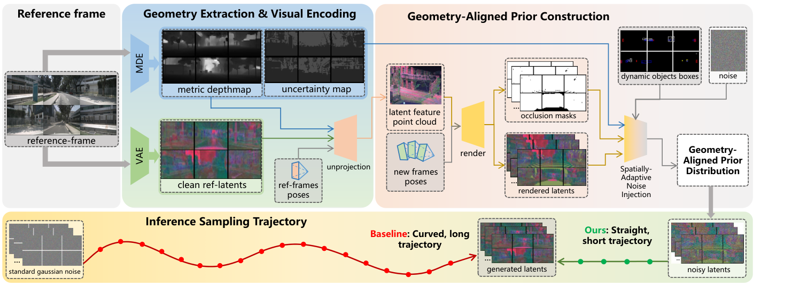

Autonomous Driving
Generative simulation, scene dynamics, and intelligent driving systems.
M.S. Candidate · Class of 2027
I am a master's student at the School of Computer Science and Engineering, Beihang University. My research interests center on autonomous driving and embodied intelligence.
北京航空航天大学计算机学院硕士研究生，研究兴趣聚焦于自动驾驶、具身智能， 以及连接感知、预测与行动的生成式智能系统。
01 · About
I am interested in intelligent systems that can perceive complex scenes, anticipate future states, and take meaningful actions in the physical world.
Education
Master's student · Class of 2027
School of Computer Science and Engineering
02 · Research
My interests sit at the intersection of generative modeling, spatial intelligence, and decision-making for agents operating in dynamic environments.
Generative simulation, scene dynamics, and intelligent driving systems.
Agents that connect multimodal perception with reasoning and action.
Learning predictive representations of environments and interactions.
Generative priors and vision-language-action models for physical AI.
03 · Updates
GeoFlow was released on arXiv and accepted at ECCV 2026.
04 · Publications

GeoFlow replaces standard Gaussian initialization with a geometry-aligned prior, shortening the sampling trajectory for efficient and temporally consistent driving video generation.